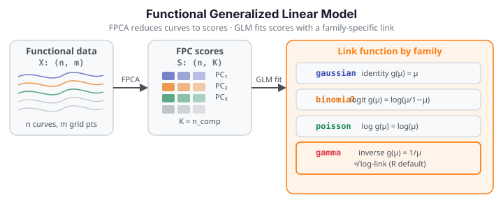

Functional Generalized Linear Model¶
Functional GLM extends scalar-on-function regression to exponential-family responses. Instead of a Gaussian error term, the response may be binary (binomial), a count (Poisson), a positive continuous value (gamma), or unrestricted Gaussian. fdars.regression.functional_glm first projects each observed curve onto a small number of functional principal components (FPCA), then fits a standard GLM on the resulting scores — one scalar score per FPC per subject. The coefficient function \(\hat\beta(t)\) is reconstructed back to the original domain by recombining the FPC loadings.

Theory¶
Let \(X_1(t), \dots, X_n(t)\) be \(n\) functional observations on grid \(t_1, \dots, t_m\), and let \(y_1, \dots, y_n\) be scalar responses from a specified exponential-family distribution. The model proceeds in two stages:
Stage 1 — FPCA projection. Decompose the functional data into n_comp leading functional principal components \(\phi_1(t), \dots, \phi_K(t)\) and form the score matrix \(S \in \mathbb{R}^{n \times K}\) where \(s_{ik} = \int X_i(t)\,\phi_k(t)\,dt\). Each curve is now represented by \(K\) scalar scores.
Stage 2 — GLM in score space. Fit a GLM on the scores:
where \(g(\cdot)\) is the link function for the chosen family and \(\gamma \in \mathbb{R}^K\) are scalar coefficients. The coefficient function on the original domain is
The GLM is fit by iteratively reweighted least squares (IRLS) with a maximum of max_iter iterations and convergence tolerance tol on the deviance change.
Link functions by family
| Family | Link | \(g(\mu)\) | Notes |
|---|---|---|---|
"gaussian" |
identity | \(\mu\) | Reduces to ordinary functional linear model |
"binomial" |
logit | \(\log(\mu / (1-\mu))\) | Binary or proportion response in \([0, 1]\) |
"poisson" |
log | \(\log(\mu)\) | Count response; response must be non-negative |
"gamma" |
inverse (canonical) | \(1/\mu\) | Positive continuous response; NOT log-link |
Gamma family uses the inverse canonical link, not log
fdars.regression.functional_glm with family="gamma" uses the inverse canonical link \(g(\mu) = 1/\mu\), not the log-link that R's glm(..., family=Gamma) defaults to. Results will differ from R if you assume a log-link. If you need a log-link for a Gamma response, transform the response before calling functional_glm with family="gaussian", or interpret the inverse-link coefficients appropriately.
AIC is not comparable to R glm() AIC
The AIC returned by functional_glm is computed from the score-space GLM log-likelihood, which treats the FPC scores as fixed predictors. This is not the same quantity as R's glm() AIC, which is based on the full-data likelihood. The AIC value here is useful for comparing models with different n_comp or family choices within fdars, but should not be compared numerically to AIC from R or other software.
Parameters
| Parameter | Type | Default | Description |
|---|---|---|---|
data |
ndarray (n, m) |
— | Functional data matrix; rows are observations |
response |
ndarray (n,) |
— | Scalar response vector |
family |
str |
"gaussian" |
Exponential family: "gaussian", "binomial", "poisson", "gamma" |
n_comp |
int |
3 |
Number of FPC components for the FPCA projection |
scalar_covariates |
ndarray (n, q) or None |
None |
Additional scalar predictors to include in the GLM alongside the FPC scores |
max_iter |
int |
25 |
Maximum IRLS iterations |
tol |
float |
1e-6 |
Convergence tolerance on deviance change |
Returns a dict:
| Key | Shape / Type | Description |
|---|---|---|
"intercept" |
float |
GLM intercept on the link scale |
"beta_t" |
(m,) |
Functional coefficient \(\hat\beta(t)\) on the original domain |
"beta_se" |
(m,) |
Pointwise standard errors of \(\hat\beta(t)\) |
"gamma" |
(K,) |
Score-space GLM coefficients (\(K\) = actual n_comp used) |
"fitted_values" |
(n,) |
Fitted responses on the response scale (inverse-linked) |
"linear_predictors" |
(n,) |
Linear predictors \(\hat\eta_i = \alpha + S_i^\top \hat\gamma\) |
"ncomp" |
int |
Actual number of FPC components used |
"coefficients" |
(K+1,) |
Full coefficient vector (intercept + score coefficients) |
"std_errors" |
(K+1,) |
Standard errors of coefficients |
"log_likelihood" |
float |
Log-likelihood of the fitted score-space GLM |
"deviance" |
float |
Residual deviance |
"iterations" |
int |
Number of IRLS iterations taken |
"aic" |
float |
AIC from the score-space GLM (not comparable to R glm AIC — see note above) |
"bic" |
float |
BIC from the score-space GLM |
"family" |
str |
Family string echoed back |
import numpy as np
from docs_fig import fig, render
import fdars.regression as reg
rng = np.random.default_rng(1)
n, m = 30, 60
t = np.linspace(0, 1, m)
X = np.array([np.sin(2 * np.pi * t * (1 + 0.3 * rng.normal())) + rng.normal(0, 0.1, m)
for _ in range(n)])
# --- Family 1: Binomial (binary response) ---
logit_true = X @ np.sin(2 * np.pi * t) / m
prob_true = 1 / (1 + np.exp(-3 * logit_true))
y_bin = rng.binomial(1, prob_true).astype(float)
res_bin = reg.functional_glm(X, y_bin, family="binomial", n_comp=3)
beta_bin = np.asarray(res_bin["beta_t"])
# --- Family 2: Poisson (count response, y >= 0) ---
# True log-rate is a linear functional of X; exp() ensures y >= 0.
log_rate_true = X @ np.cos(2 * np.pi * t) / m
y_poi = rng.poisson(np.exp(1.5 * log_rate_true)).astype(float)
res_poi = reg.functional_glm(X, y_poi, family="poisson", n_comp=3)
beta_poi = np.asarray(res_poi["beta_t"])
f, (a0, a1) = fig(1, 2, figsize=(12.0, 3.8))
a0.plot(t, beta_bin, color="#3f51b5", lw=2.2)
a0.set(title="Functional GLM (binomial) — β(t)",
xlabel="t", ylabel="β(t)")
a1.plot(t, beta_poi, color="#e8710a", lw=2.2)
a1.set(title="Functional GLM (poisson) — β(t)",
xlabel="t", ylabel="β(t)")
print(render(f))
print(f"binomial deviance={res_bin['deviance']:.3f} aic={res_bin['aic']:.3f} "
f"family={res_bin['family']}")
print(f"poisson deviance={res_poi['deviance']:.3f} aic={res_poi['aic']:.3f} "
f"family={res_poi['family']}")
print("FDARS_FENCE_OK")
References¶
- Cardot, H., Ferraty, F., and Sarda, P. (1999). "Functional linear model." Statistics and Probability Letters, 45(1), 11–22. — FPC-score representation in functional regression.
- James, G. M. (2002). "Generalized linear models with functional predictors." Journal of the Royal Statistical Society, Series B, 64(3), 411–432. — functional GLM methodology underlying
functional_glm. - Wood, S. N. (2017). Generalized Additive Models: An Introduction with R, 2nd ed. CRC Press. — Chapter 3: GLM theory and IRLS algorithm.
- Ramsay, J. O., and Silverman, B. W. (2005). Functional Data Analysis, 2nd ed. Springer. — Chapter 15: principal components basis for functional regression.